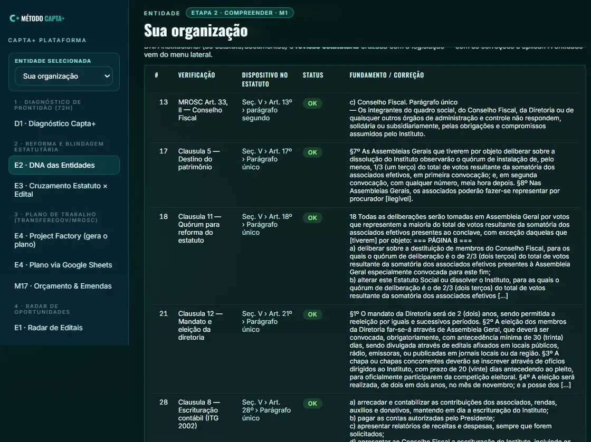

Primeiro: são dois scores diferentes
Prontidão responde "a entidade está pronta para captar?" — 18 itens em três dimensões (documental e governança, projeto e parceria, execução e prestação), em Diagnóstico de prontidão.
Prioridade responde "esta vaga vale o esforço agora?" — é o CAPTA_SCORE desta página, calculado por oportunidade. Uma entidade pode estar pronta e a oportunidade não valer, e vice-versa.
O score da entidade, dentro da plataforma
Existe um terceiro número, e ele não aparece aqui porque é dado de cliente: a maturidade operacional da entidade, calculada na Capta+ Plataforma em oito famílias — documentação, governança, estatuto, projetos, captação, execução, prestação de contas e dados — com a indicação do gargalo atual (a família mais fraca).
A diferença é de pergunta, não de método: o site ordena oportunidades; a plataforma mede a entidade. As duas leituras se encontram no diagnóstico: sem entidade pronta, a melhor oportunidade não se converte.

A fila: a nota que ordena o trabalho
Antes do score, cada edital recebe uma nota de fila, com três pesos declarados:
| Componente | Peso | Como é aplicado |
|---|---|---|
| Elegibilidade | 60 | Veredito do mecanismo para a natureza jurídica da entidade (regra legal). |
| Território | 20 | Mesma UF = 1,0 · federal = 0,9 · outra UF = 0,15. Edital estadual ou municipal de outra UF nem entra. |
| Tema | 20 | O texto do edital cita tema que a entidade tipifica. Sem tema, o edital não entra na fila. |
Nota abaixo de 45 não entra na fila. A nota é fila de trabalho, não parecer jurídico nem promessa de aprovação.
O CAPTA_SCORE: oito dimensões
Sobre cada par entidade × edital da fila, calcula-se o índice de prioridade:
| Dimensão | Peso | O que ela mede |
|---|---|---|
| Elegibilidade | 25% | A natureza jurídica da entidade pode ser proponente neste mecanismo (regra legal do mecanismo). |
| Compatibilidade estatutária | 20% | O tema e o público do edital estão dentro da finalidade declarada no estatuto. |
| Capacidade técnica | 15% | Evidência documental de projeto na pasta: proposta, aprovação (certidão/DOU) e execução (termo/extrato). |
| Capacidade documental | 10% | Certidões mínimas vigentes na data de hoje. |
| Potencial financeiro | 10% | Teto do mecanismo comparado ao valor do projeto. |
| Probabilidade de execução | 10% | Do que foi aprovado, quanto foi efetivamente captado. |
| Prazo | 5% | Dias até o prazo do edital — quanto mais perto, menor a nota. |
| Potencial estratégico | 5% | Se o mecanismo é porta de entrada ou fonte secundária para aquele perfil. |
Total = soma de peso × nota dividida pela soma dos pesos avaliados.
Cada dimensão vale de 0 a 100.
A regra de cobertura — a parte que evita mentira
Dimensão sem insumo fica NÃO AVALIADA. Ela sai da ponderação em vez de virar zero ou chute. O resultado informa ao lado a cobertura: quanto dos pesos entrou na conta.
A ordem da fila só usa o CAPTA_SCORE quando a cobertura passa de 45%. Abaixo disso, a ordem volta a ser a nota da fila — porque um score calculado sobre pouco dado não deve decidir prioridade.
Por isso você pode ver CAPTA 78/55%: 78 é o índice, 55% é quanto do
peso foi medido. O segundo número é tão importante quanto o primeiro.
As faixas
| Score | Faixa |
|---|---|
| 85–100 | ATAQUE IMEDIATO |
| 70–84 | ALTA PRIORIDADE |
| 55–69 | CONDICIONADA |
| 40–54 | BAIXA |
| 0–39 | NAO PRIORITARIA |
Trava de habilitação. Se a habilitação da entidade não está completa (certidões vigentes), a faixa é rebaixada para condicionada (habilitação) — mesmo que o índice seja alto. Sem certidão em dia não existe ataque imediato.
O que descarta um edital antes da nota
- Natureza incompatível: quando o mecanismo não aceita aquela natureza jurídica (regra legal do mecanismo, não opinião).
- Fora do território: edital estadual ou municipal de outra UF.
- Sem tema: o texto não cita nenhum tema que a entidade tipifica.
- Prazo vencido: data de encerramento anterior a hoje — sai da fila e não vira "janela perdida".
- Não é edital: página institucional, compra pública, credenciamento de fornecedor, consulta pública.
- Ano anterior sem prazo publicado: edital de ciclo encerrado não entra como oportunidade.
Aderência ao objeto: o que aparece e o que não aparece
A finalidade declarada no estatuto é comparada ao tema e ao público do edital. Quando a probabilidade passa de 0,70, a linha recebe aderência ao objeto: alta. Abaixo disso, o valor fica no registro interno e não é exibido — evidência fina não deve virar acusação na tela.
Só roda quando existe cláusula de finalidade transcrita no estatuto. Sem ela, a dimensão fica sem avaliação, e a página diz isso.
O que o edital cobra: execução ou resultado
O documento do edital é lido para responder se ele exige indicador de resultado (mudança medida, linha de base) ou apenas execução (produto entregue e comprovação física e financeira). Cortes: acima de 0.60 é resultado; entre 0.40 e 0.60 é ambíguo e precisa de conferência; abaixo de 0.40 é execução.
A leitura é feita no documento (PDF ou página oficial), não no título, e o trecho fica guardado para conferência.
Prazo e janela de decisão
O prazo é lido no documento do edital. Quando a entidade tem tempo de decisão cadastrado,
calcula-se prazo útil = dias até o prazo − dias de decisão. Se der negativo, o edital
não entra na fila: vira janela perdida — não é falta de oportunidade, é tempo de
decisão maior que o prazo.
Habilitação: cinco certidões, uma régua
| Certidão | Validade típica |
|---|---|
| CND Federal (RFB/PGFN) | 180 dias |
| CRF FGTS | 30 dias |
| CNDT (trabalhista) | 180 dias |
| CND Estadual | 60 dias |
| CND Municipal | 60 dias |
Cada certidão vale 1 se vigente, 0,5 se vence em até 30 dias e 0 se vencida; a soma dividida por cinco é o índice de habilitação.
O funil: o que aconteceu com a oportunidade
Sete estágios, na ordem do dinheiro: vista → enviada → aprovada → captando → captada → executada → resultado. Fora da linha, sem contar conversão: reprovada e desistida.
Daí saem as taxas: aprovadas ÷ enviadas, captadas ÷ aprovadas e captado ÷ pedido. Enquanto não há ciclo fechado, a dimensão de execução fica em premissa — não em zero.
O que esta pontuação não é
- Não é probabilidade de aprovação. É ordem de ataque.
- Não é parecer jurídico. A elegibilidade segue a regra do mecanismo; o edital deve ser lido.
- Não é promessa de resultado. A decisão do aporte é do financiador.
- Não esconde ausência de dado: o que não foi medido aparece como cobertura, não como nota alta.
Diagnóstico de prontidão (72h), gratuito: elegibilidade, pendência documental e prioridade das oportunidades abertas hoje. Atuação de meio, sem promessa de resultado.
Agendar diagnóstico gratuito — 72hPesos e faixas são lidos do cadastro de scoring do próprio sistema; cortes vêm dos módulos que os aplicam. Última atualização: 2026-10-29.